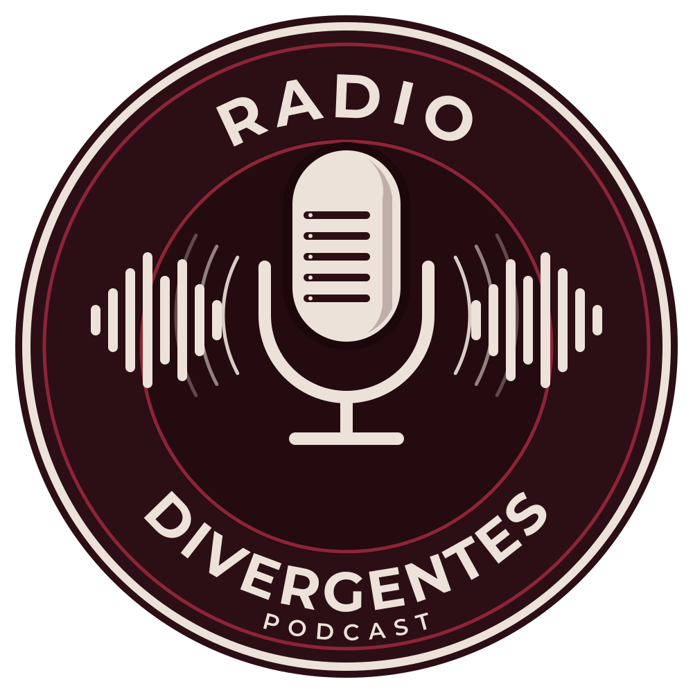
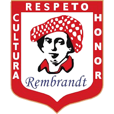

Radio Divergentes
Para quien piensa diferente
3.1
Ética · Instituto Rembrandt
4 voces · 1 tema · 1 dilema
12 episodios

Un salón del Rembrandt
Profesor encargado: Omar Ávila Cruz
En la pantalla de Fadori
Circuito cerrado · en el recreo
Podría haber recaudación
Sólo con autorización de Dirección · cada peso con su comprobante
Para la comunidad
Radio Divergentes · grupo 3.1 · Instituto Rembrandt
Profesor encargado: Omar Ávila CruzVoz: ElevenLabs
Música: «Inspired», Kevin MacLeod (incompetech.com), CC BY 4.0
Letras: Anton, Poppins y DM Serif Display (SIL Open Font License)
Hecho con el Estudio de podcast y la pantalla de Fadori